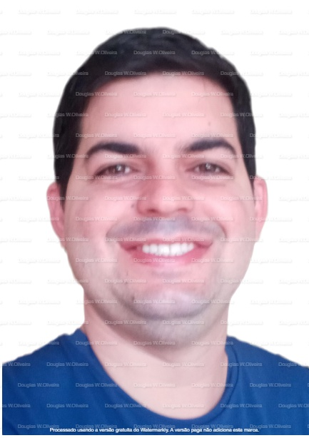

Especialista em Gestão de Segurança Privada | Supervisão Operacional & Inteligência em Segurança

Olá! Sou Douglas W. Oliveira, especialista em Gestão de Segurança Privada com mais de 10 anos de experiência em supervisão operacional, proteção de pessoas e patrimônio, gestão de riscos corporativos e inteligência em segurança.
Meu objetivo é compartilhar conhecimento através de cursos e treinamentos profissionais na área de segurança privada.
Experiência Profissional
Grupo Protege
Vigilante Líder (2017 - Presente): Liderança de equipes, supervisão operacional e controle de acesso.
Vigilante de Carro Forte (2015 - 2017): Transporte seguro de valores.
Vigilante de Base (2014 - 2015): Segurança patrimonial e análise de riscos.
Auxiliar de Processamento (2012 - 2014): Suporte administrativo financeiro.
Serviços & Especialidades
Consultoria Corporativa
Planejamento de segurança empresarial, protocolos internos e gestão de riscos.
Treinamento de Equipes
Capacitação de supervisores e equipes em operações de segurança.
Mapeamento de Vulnerabilidades
Avaliação de riscos e identificação de pontos críticos de segurança.
Gestão de Sistemas
Monitoramento, CFTV, alarmes e controle de acesso inteligente.
Planos de Contingência
Estratégias para emergências, evacuação e proteção de patrimônio.
Diferenciais
Experiência Comprovada
Mais de 10 anos de atuação em segurança privada, com resultados concretos.
Credenciamento Legal
Registro na Polícia Federal e certificações reconhecidas pelo setor.
Tecnologia e Dados
Uso de análise de dados para otimizar processos e reduzir incidentes.
Resultados Eficientes
Redução de riscos, aumento de produtividade e segurança de equipes e patrimônio.
Depoimentos & Cases de Sucesso
"O trabalho do Douglas elevou o padrão de segurança em nossa empresa. Sua metodologia e liderança são excepcionais." – Empresa XYZ
"Profissional competente, sempre disponível e atento aos detalhes críticos de segurança." – Cliente ABC
Formação, Certificações & Contato
Formação Acadêmica
Tecnologia em Gestão de Segurança Privada – UNINTER (2020-2022)
Tecnologia em Ciência de Dados – UNINTER (2021)
Certificações
Vigilante Patrimonial, Carro Forte, Supervisor de Vigilantes, Armamento/Tiro, Extensão em Transporte de Valores.